Qui suis-je ?
Bien le bonjour,
Je suis Glenn GEHANNE, 23 ans et étudiant en première année en BUT Métiers du Multimédia et de l'Internet (MMI) au sein de l'IUT de Lannion.
Savoir ce que je peux faire et ce que j'aime faire est primordial pour moi. C'est pour cela que j'ai effectué des stages, formations et une mission de Service Civique ces dernières années dans les domaines littéraires, numériques et sociales.
Envieux d'augmenter mes compétences, le BUT MMI me permet d'en apprendre davantage sur les domaines du développement Web, de la communication, du graphisme et de l'audiovisuel.
Pour en savoir plus sur mon profil, mes compétences et me contacter, c'est par ici 👇🏻
Mon parcours
Tout commence pour moi en 2020 par l'obtention du baccalauréat STMG (Sciences et Technologies du Management et de la Gestion). Après mûres réflexions, mon parcours s'est affiné à partir de l'année 2024 vers les métiers du numérique.
Direction une Pré-qualification aux métiers du numérique début 2024, où j'ai amélioré ma culture numérique grâce à une première certification Pix et un MOOC sur la cybersécurité, entre autres.
En 2025, j'ai suivi une formation Création graphique et numérique, durant laquelle j'ai découvert les logiciels de la suite Adobe, notamment Illustrator, Photoshop et InDesign, avant de recevoir une certification Isograd TOSA pour chacun des trois.
Ces deux mois m'ont aidé à me propulser vers le BUT MMI (Bachelor Universitaire de Technologie Métiers du Multimédia et de l'Internet), que je compte obtenir durant ces prochaines années. J'augmente ainsi mes compétences et savoirs sur différents domaines, tels que la communication, l'audiovisuel, le développement Web ou encore la création graphique numérique. Je progresse également grâce à des cours et de nombreux projets effectués servant de mises à l'épreuve.
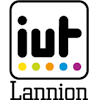
Bachelor Universitaire de Technologie
Métiers du Multimédia et de l'InternetDepuis Septembre 2025
Institut Universitaire de Technologie
Lannion (22)
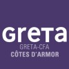
Formation
Création graphique et numériqueMai - Juillet 2025
Greta-CFA des Côtes d'Armor
Lycée Rabelais, Saint-Brieuc (22)
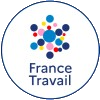
Volontaire en Service Civique
Conseiller numérique
Novembre 2024 - Mai 2025
France Travail
Lannion (22)
Formation
Prépa Avenir AdultesAvril - Juin 2024
Greta-CFA des Côtes d'Armor
Lycée Kerraoul, Paimpol (22)
Stage
Conseiller en vente et Technicien informatique
Mars 2024
Axe-Info
Lannion (22)
Formation
Pré-qualification aux métiers du numériqueJanvier - Avril 2024
Greta-CFA des Côtes d'Armor
Lycée Felix Le Dantec, Lannion (22)
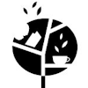
Stage
Libraire
Novembre 2021
Le Bel Aujourd'hui
Tréguier (22)
Baccalauréat
Sciences et Technologies du Management et de la Gestion
Septembre 2019 - Juin 2020
Lycée Joseph Savina
Tréguier (22)
Mes compétences
Développement Web
Concevoir un site Web :
Construction d'un Wireframe
Réalisation d'une maquette
Rédaction de pages en HTML
Visualisation d'une page HTML avec LiveServer
Création d'une page en HTML avec un framework (Bulma)
Figma
VisualStudio Code
HTML 5
CSS 3
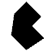
Bulma
(Framework)
Audiovisuel
Réalisation d'un court-métrage :
Écriture d'un pitch, synopsis et scénario
Réalisation d'un storyboard
Découpage d'un film
Enregistrement de voix off et doublage
Montage d'un film
DaVinci Resolve
Production graphique
Élaboration d'une affiche :
Réalisation d'une veille graphique
Recherche de l'existant
Élaboration de crayonnés
Création d'une maquette visuelle
Conception d'illustrations digitales
Hiérarchisation des informations
Figma
Adobe Illustrator
Adobe Photoshop
Marketing
Recommander une stratégie de communication :
Analyse du contexte (SWOT, PESTEL)
Conception d'un plan de communication
Rédaction d'une charte éditoriale
Création d'un sondage
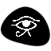
Sphinx
Mes projets
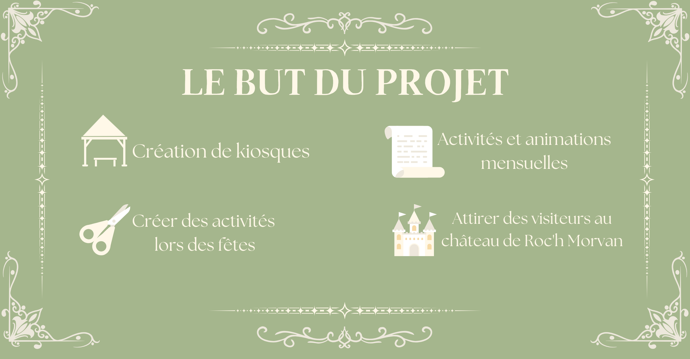
Projet de revalorisation de la commune de La Roche-Maurice
Gestion de projet
Octobre → Décembre 2025
Projet de revalorisation de la commune de La Roche-Maurice
Contexte
Durant ce projet universitaire en trio, mon objectif était de créer un projet à but touristique pour revaloriser une commune à l'international.
Les principales contraintes étaient que le village devait avoir moins de 2000 habitants et ne pas posséder de façade maritime.
Le village choisi était La Roche-Maurice, situé dans le Finistère.
Missions
Brainstorming en trio sur la commune choisie et les projets potentiels
Rédaction d'un cahier des charges
Construction d'un plan de communication
Outils
Canva
Google Docs
Bilan
J'ai réussi à concevoir un premier cahier des charges pour un projet.
Il s'agissait également de la première fois où je devais construire un plan de communication.
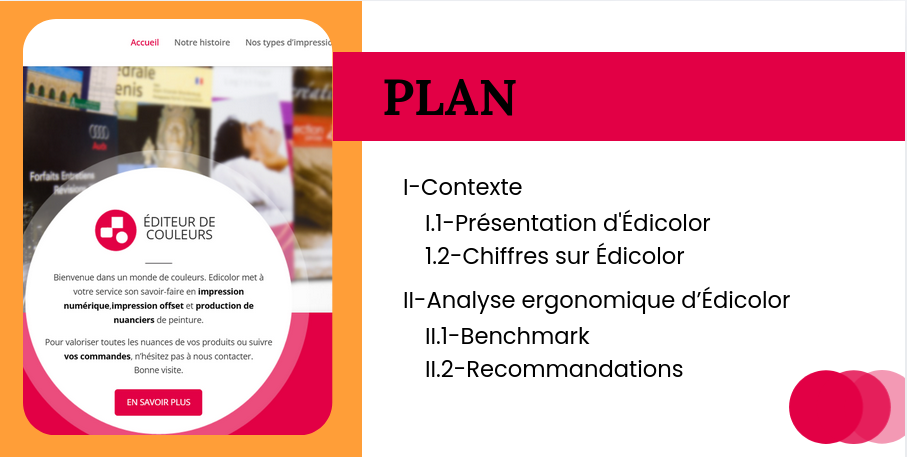
Audit de la communication numérique d'Édicolor
Ergonomie
Novembre 2025 → Janvier 2026
Audit de la communication numérique d'Édicolor
Contexte
Durant ce projet universitaire en trio, mon objectif était d'analyser la communication numérique d'une entreprise labellisée Entreprise du Patrimoine Vivant, avant de proposer des recommandations.
Le site attitré était celui d'Édicolor.
Le site Web (remanié depuis les consultations pour l'audit) est accessible en suivant ce lien.
Missions
Analyse du contexte de l'entreprise (SWOT, PESTEL)
Étude de sa communication en ligne (Analyse sémiotique, Heuristiques de Nielsen, Architecture de l'information, Benchmark)
Réflexions sur des recommandations
Outils
Canva
Color Contrast Checker (Coolors.co)
Google Sheets
Pappers
Bilan
J'ignorais l'existence d'analyse aussi poussées que celle-ci avant de réaliser ce projet.
J'ai également appris ce qu'était un heuristique et un benchmark, qui me semblent maintenant primordiaux pour effectuer une étude sur une communication d'entreprise.
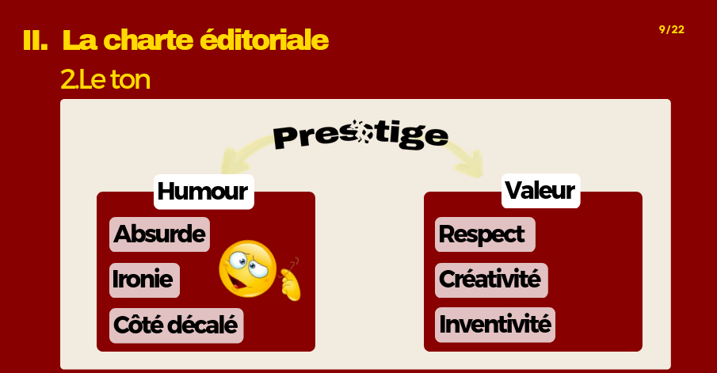
Recommandation de communication numérique pour le festival MMI À l'West Fest
Communication, Marketing
Novembre 2025 → Janvier 2026
Recommandation de communication numérique pour le festival MMI À l'West Fest
Contexte
Durant ce projet universitaire en quatuor, mon objectif était de créer une stratégie de communication et des prototypes de contenu pour le festival local de notre filière.
Missions
Audit des précédentes éditions
Création d'un plan de communication
Élaboration d'une charte éditoriale
Conception de prototypes de mails, ainsi que des posts et contenus pour les réseaux sociaux
Outils
Caméra
Canva
Google Docs
Bilan
J'ai appris la complexité, mais aussi l'importance d'un plan de communication et ses différentes phases.
J'ai également conçu pour la première fois du contenu adapté pour des réseaux sociaux, notamment Instagram.
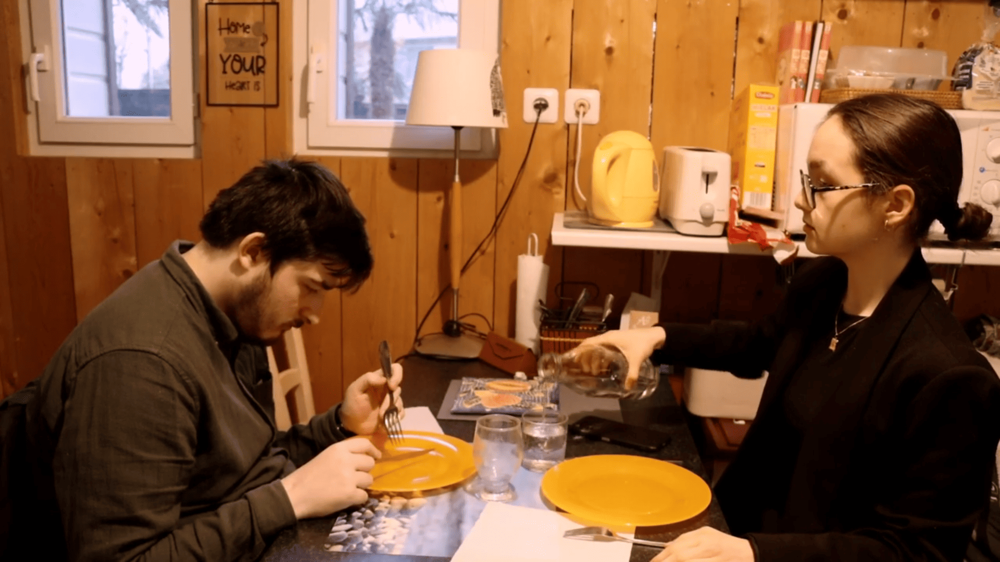
Réalisation du court-métrage "Parlez-en"
Audiovisuel
Novembre 2025 → Janvier 2026
Réalisation du court-métrage "Parlez-en"
Contexte
Durant ce projet universitaire en quatuor, mon objectif était d'écrire et tourner, puis monter un court-métrage de sensibilisation.
Les principales contraintes étaient de n'avoir que dix types de plans, dont un à notre choix, pas de dialogues exceptés en voix-off, et quatre heures pour le tournage.
Missions
Brainstorming sur le sujet du film
Écriture du pitch, du synopsis, du scénario et des fiches personnages
Préparation des plans avec le storyboard
Tournage du court-métrage
Montage du film
Outils
DaVinci Resolve
Matériel de tournage
(Canon 90D avec optique de 50mm, Trépied Manfrotto, Mixette Zoom F6 et Perche Rycote)
Bilan
J'ai réussi à m'améliorer dans l'écriture d'un film, appris son montage et l'action devant la caméra pour augmenter mes compétences de jeu et mon aisance à l'oral.
Le court-métrage est consultable en suivant ce lien.
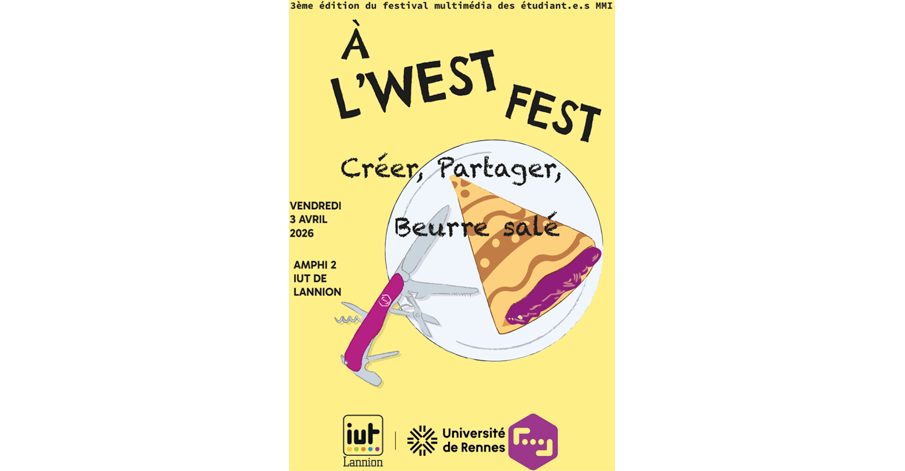
Conception d'une nouvelle affiche pour le festival MMI À l'West Fest
Production graphique
Décembre 2025 → Janvier 2026
Conception d'une nouvelle affiche pour le festival MMI À l'West Fest
Contexte
Durant ce projet universitaire en trio, mon objectif était de réaliser la prochaine affiche potentielle du festival local de notre filière.
La principale contrainte résidait dans le respect du brief, contenant les thèmes et éléments imposés pour la créer.
Missions
Brainstorming en trio sur l'identité graphique
Recherche d'affiches existantes pour l'inspiration
Élaboration de crayonnés
Création d'une maquette visuelle
Hiérarchisation des informations
Outils
Adobe Illustrator
Figma
Bilan
J'ai réussi à m'améliorer dans le processus de création d'une affiche promotionnelle, notamment la réalisation de crayonnés et la hiérarchisation des informations transmises.
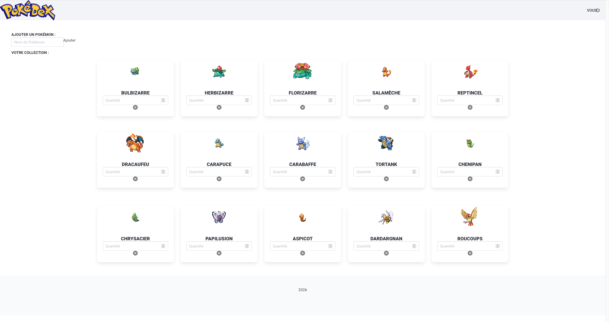
Création d'un site Web PokéDex
Développement Web
Novembre 2025 → Janvier 2026
Création d'un site Web PokéDex
Contexte
Durant ce projet universitaire en solo, mon objectif était de créer un site Web simulant une gestion de collection de Pokémon.
La principale contrainte était de créer les différentes pages avec le framework Bulma.
Missions
Élaboration d'une planche univers
Construction d'un wireframe
Réalisation d'une maquette interactive
Rédaction d'une page en HTML avec un framework (Bulma)
Mise en ligne
Outils
Canva
Figma
Filezilla
Microsoft VisualStudio Code
(HTML 5 + CSS Bulma)
Bilan
J'ai réussi à mieux comprendre le processus de création d'un site de A à Z, sa mise en ligne et à m'améliorer sur ma maitrise de l'HTML et du CSS par le biais d'un framework.
De plus, j'ai augmenté mes compétences sur le logiciel Figma, même s'il me reste encore du progrès.
Mes contacts
Je vous remercie d'avoir pris le temps de me connaitre davantage.
En espérant que cette présentation vous a également donné envie de me contacter !
Cliquez ici pour accéder à mon CV, contenant mes modalités de contact telles que mon compte LinkedIn et mon adresse mail.
À très bientôt, je l'espère.